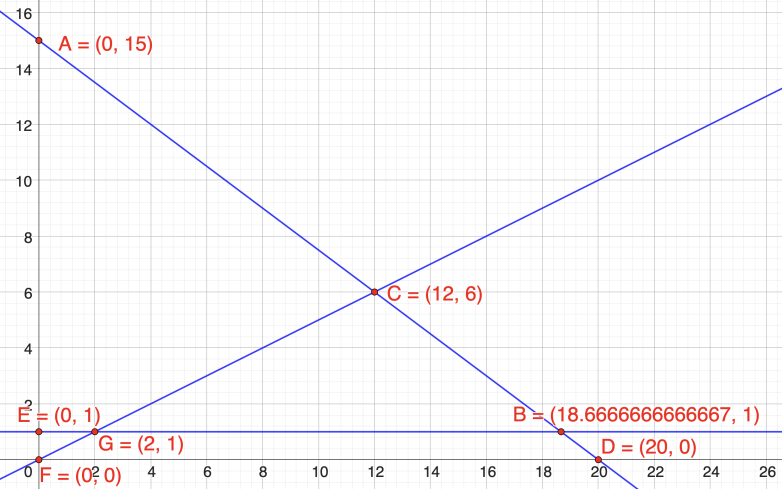

Un ejercicio de selectividad de cada tipo, con la solución escrita como en el examen.
- examen Andalucía Extraordinaria Suplente 2 2026 (nº 5). Consideremos el recinto definido por las siguientes inecuaciones:
a) (1.75 puntos) Represente gráficamente el recinto y calcule sus vértices.
b) (0.5 puntos) Indique razonadamente si los puntos P(3, 0.9) y Q(1, 5.9) pertenecen al recinto.
c) (0.75 puntos) Obtenga el valor máximo y mínimo de la función objetivo F(x, y) = 2x + 3y − 2 en el recinto anterior, así como los puntos donde se alcanzan.Solución
Apartado b) · ¿Pertenecen P(3; 0,9) y Q(1; 5,9) al recinto?
Un punto pertenece al recinto si cumple todas las inecuaciones. Las compruebo una a una.
P(3; 0,9): 3 · 3 − 4 · 0,9 = 9 − 3,6 = 5,4 ≤ 6 ✓; 3 + 0,9 = 3,9 ≤ 9 ✓; 3 + 4 · 0,9 = 3 + 3,6 = 6,6 ≤ 24 ✓; 3 · 3 + 2 · 0,9 = 9 + 1,8 = 10,8 ≥ 6 ✓; x = 3 ≥ 0 ✓.
Q(1; 5,9): 1 + 4 · 5,9 = 1 + 23,6 = 24,6 y 24,6 ≤ 24 no se cumple.
P(3; 0,9) sí pertenece al recinto. Q(1; 5,9) no, porque no cumple x + 4y ≤ 24.
Problema tipo 7.
- examen Asturias Ordinaria 2025 (nº 115). Pregunta 2. Opción B. En un parque de atracciones quedan 2 horas para el cierre. Una persona quiere repartir ese tiempo entre sus dos atracciones favoritas: dragón rojo y gran loop. Cada viaje en el dragón rojo se estima que dura 6 minutos. Cada viaje en gran loop dura unos 8 minutos. Quiere hacer al menos 1 viaje en el gran loop y que el número de viajes en el dragón rojo sea a lo sumo, el doble que el número de viajes en el gran loop.
a) Si se sube 8 veces en el dragón rojo, ¿cuántos viajes puede hacer en el gran loop? ¿Puede subir 6 veces a cada atracción? (1 punto)
b) Siendo “x” el número de viajes en el dragón rojo e “y” el número de viajes en el gran loop, a partir de la imagen, indica cuál es la región factible para el problema que consiste en resolver cuántas veces puede subir esta persona a cada atracción. Señala los vértices (p. ej.: B, D, F y G) y justifica tu respuesta. (1 punto)

c) Si los viajes en el dragón rojo cuestan 5 euros y en el gran loop 3 euros, ¿cuánto dinero puede llegar a gastar, como máximo? ¿Y cuánto puede gastar, como mínimo? (0.5 puntos)Solución
Apartado a) · Si se sube 8 veces al dragón rojo
Hago x = 8 en las restricciones y despejo y:
Tiempo: 3 · 8 + 4y ≤ 60 ⇒ 4y ≤ 60 − 24 = 36 ⇒ y ≤ 36 : 4 = 9
El doble: 8 ≤ 2y ⇒ y ≥ 8 : 2 = 4
Y además y ≥ 1, que ya se cumple.
Con 8 viajes en el dragón rojo puede hacer entre 4 y 9 viajes en el gran loop.
¿Puede subir 6 veces a cada atracción? Compruebo (6, 6): 6 · 6 + 8 · 6 = 36 + 48 = 84 ≤ 120 ✓; 6 ≥ 1 ✓; 6 ≤ 2 · 6 = 12 ✓.
Sí puede: 6 viajes en cada atracción cumplen todas las condiciones y sobran 120 − 84 = 36 minutos.
Problema tipo 8.
- examen Andalucía Extraordinaria 2022 (nº 65). Bloque A EJERCICIO 2 Se considera el recinto definido por las siguientes inecuaciones:

a) (1.4 puntos) Represente dicho recinto y determine sus vértices.
b) (0.6 puntos) Calcule los valores máximo y mínimo de la función F(x,y)= x+4y en el recinto anterior, así como los puntos donde se alcanzan.
c) (0.5 puntos) ¿Podrá tomar la función objetivo F el valor 40 en algún punto de la región factible? ¿Y el valor 20? Justifique las respuestas.Solución
Paso 4 · Valor de F en los vértices
| Vértice | Valor de F(x, y) = x + 4y |
|---|
| A(9, 5) | F(A) = F(9, 5) = 9 + 4 · 5 = 29 |
| B(3, 8) | F(B) = F(3, 8) = 3 + 4 · 8 = 35 ← Máx |
| C(0, 7) | F(C) = F(0, 7) = 0 + 4 · 7 = 28 |
Apartado c) · ¿Puede valer F 40? ¿Y 20?
F = 40: no, porque 40 > 35 y 35 es el valor máximo de F en el recinto.
F = 20: sí. F toma todos los valores menores o iguales que 35, porque la región es una sola pieza y F no tiene mínimo.
Un punto concreto: (4, 4) → F(4, 4) = 4 + 4 · 4 = 20.
¿Pertenece (4, 4) al recinto? 4 − 2 · 4 = −4 ≤ 7 ✓; −4 + 3 · 4 = 8 ≤ 21 ✓; 4 + 2 · 4 = 12 ≤ 19 ✓; 4 + 4 = 8 ≤ 14 ✓.
F no puede valer 40 (supera el máximo), pero sí puede valer 20: por ejemplo, en el punto (4, 4).
Problema tipo 9.